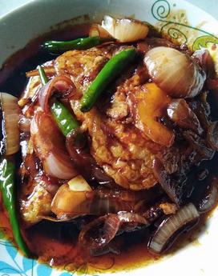

Telur Masak Kicap

Description/Penerangan resepi
Telur digoreng separa masak, kemudian dimasak dengan rempah masak kicap yang lazat. Dimakan bersama nasi putih panas-panas. Boleh bertambah 2 pinggan makan nasi. Selamat mencuba.
Ingredients/Ramuan
- Telur digoreng separa masak.
- Bawang besar
- Bawang putih
- 3 sudu besar kicap manis
- 2 sudu besar sos cili
- Sedikit garam
- Cili api/padi
Steps
- Mula-mula tumis bawang merah dan bawang putih sehingga naik bau.
- Kemudian masukan kicap manis bersama sos cili dan kacau bagi sebati.
- Masukkan garam.
- Kemudian masukan telur dan balik-balikkan telur tersebut.
- Masukan bawang besar dan cili api.
- Tunggu mendidih boleh tutup api.